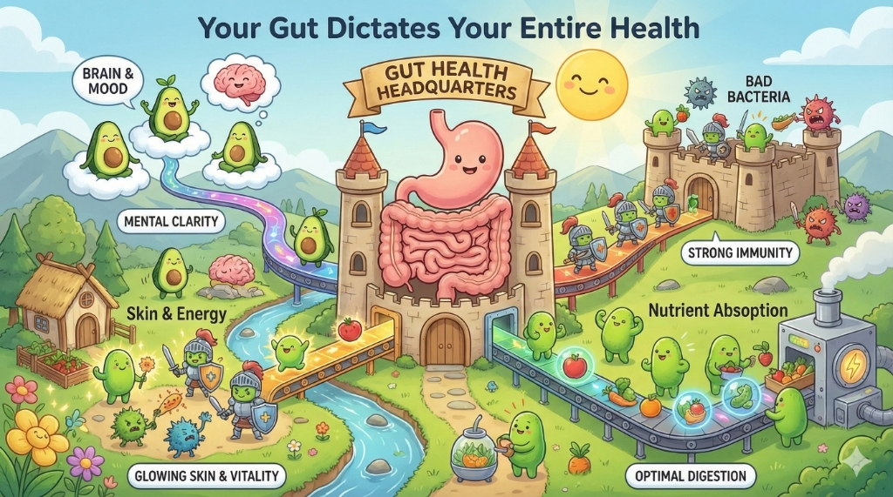
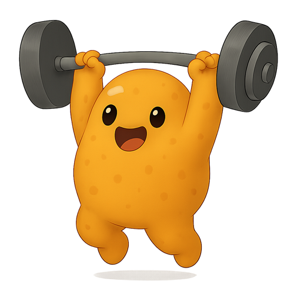

No referrals required. No 15-minute rush jobs. Just answers. Stop modifying your life around your symptoms.
Start Healing Today
You’ve been told to "eat more fiber." You’ve been prescribed laxatives or antacids. You’ve been told your bloating is "normal" or just stress-related.
The "IBS" label is often a catch-all term used when standard testing can’t find the specific cause. We don't settle for labels; we look for mechanisms.
When the gut is disrupted, it sends distress signals to your entire body.
It's not just "extra gas." Chronic bloating is often a sign of dysbiosis (an imbalance of bacteria) or SIBO.
In these cases, "healthy" fiber can actually make you worse because the bacteria ferment it in the wrong place. We clarify exactly what fuels your fire.
You might not have too much acid—you might have too little.
We are taught to fear stomach acid, but you need it to break down food and kill pathogens. Low stomach acid (Hypochlorhydria) is a primary driver of bloating and nutrient deficiency.
Your skin is a map of your gut.
Struggling with stubborn acne, rosacea, or eczema? Inflammation in the digestive tract leads to "leaky gut," allowing toxins to enter the bloodstream and trigger skin flare-ups. We heal the skin from within.

Digestive healing is detailed detective work that insurance rarely covers.
Because we operate as a private practice, we have the freedom to explore advanced protocols.
We don't just guess. We can explore functional testing options (like GI-MAP or breath testing) and guide you through detailed elimination and reintroduction protocols (like Low FODMAP).
The supplement industry is unregulated. I guide you toward professional-grade, third-party tested supplements that actually work—skipping the expensive trial-and-error.
Your gut produces 95% of your serotonin. By healing your digestion, we often see profound improvements in mood, anxiety, and mental clarity.
We don't follow trends; we follow physiology.
The Science: This review confirms that intestinal dysbiosis can negatively impact skin function.
The Science: Research indicates that up to 78% of "IBS" patients actually have SIBO, requiring specific treatment.
The Science: Microbes in your gut communicate directly with your brain, influencing emotions.
Your health is your most valuable asset. Stop cycling through temporary fixes and build a foundation for a lifetime of metabolic health.
Book Your Gut Health Discovery Call